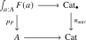
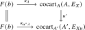
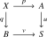

We now prove that the universe \(\Cat\) admits all small limits and colimits. Colimits are obtained by localizing a cocartesian unstraightening, whereas limits are computed by its category of cocartesian sections. We then record consequences for total categories of cocartesian fibrations, limits of adjunctions, functor categories, and pullbacks.
13.2.1 Completeness and cocompleteness of categories
Theorem 13.2.1 (Colimits of categories). The category \(\Cat\) admits small colimits. More precisely, let \(F\colon I \to \Cat\) be a functor from a small category, with associated cocartesian fibration \(p\colon X \to I\). Then \(\colim_I F\) is the localization of \(X\) at the \(p\)-cocartesian morphisms.
Proof
Since \(p\colon X\to I\) and \(I\to *\) are small cocartesian fibrations, regularity, (Cat1), shows that \(X\) is small. Closure under localizations, (Cat7), then gives a small localization \[ \gamma\colon X\longrightarrow\widetilde X \] at the \(p\)-cocartesian morphisms. For a small category \(B\), directed univalence identifies natural transformations \(F\to B_I\) with cocartesian functors \(X\to I\times B\) over \(I\). Every such functor is of the form \((p,\varphi)\) for a functor \(\varphi\colon X\to B\). It is cocartesian if and only if \(\varphi\) sends the \(p\)-cocartesian morphisms to isomorphisms, since the \(\pr_1\)-cocartesian morphisms in \(I\times B\) are precisely the pairs \((u,v)\) for which \(v\) is invertible. The universal property of \(\gamma\) therefore gives a natural equivalence \[ \Hom_{\Fun(I,\Cat)}(F,B_I) \iso \Hom_{\Cat}(\widetilde X,B). \] For \(B=\widetilde X\), the inverse of this isomorphism sends \(\id_{\widetilde X}\) to the cocone \(\eta_F\colon F\to\widetilde X_I\) classified by the cocartesian functor \((p,\gamma)\colon X\to I\times\widetilde X\). Under the preceding identifications, the inverse is precisely precomposition with \(\eta_F\). Thus \(\eta_F\) is a colimit cocone.
The construction and the preceding calculation are valid in an arbitrary anima context. Hence Proposition 7.2.2 shows that \(\Cat\) admits \(I\)-indexed colimits. Since \(I\) was arbitrary, \(\Cat\) admits all small colimits.
Corollary 13.2.2. Let \(A\) be a small category and \(F\colon A\to\Cat\) a functor. The canonical functors \(i_a\colon F(a)\to \colim_{a : A} F(a)\) induce a cover of the form \[ \sum_{a : A^\simeq} F(a)^\simeq \to (\colim_{a : A} F(a))^\simeq\, . \]
Proof
We know that \(\colim_{a : A} F(a)\) is a localization of
\(\int_{a : A} F(a)\), where the latter is defined by the pullback below.

Corollary 13.2.3. Let \(A\) be a small category and \(F\colon A\to\An\) a functor. The canonical maps \(i_a\colon F(a)\to \colim_{a : A} F(a)\) induce a cover of the form \[ \sum_{a : A^\simeq} F(a) \to \colim_{a : A} F(a)\, . \]
Proof
This is a particular case of the previous corollary since the embedding of \(\An\) into \(\Cat\) commutes with colimits (being a left adjoint).
Theorem 13.2.4 (Limits of categories). The category \(\Cat\) admits small limits. For a functor \(F\colon I\to\Cat\) from a small category, the limit \(\lim_I F\) is the category of cocartesian sections of the cocartesian fibration \(p\colon X\to I\) classified by \(F\).
Proof
Let \(p\colon X\to I\) classify \(F\). For every small category \(Y\), directed univalence identifies cones from the constant diagram \(Y_I\) to \(F\) with cocartesian functors \(I\times Y\to X\) over \(I\). The exponential law, together with the fact that preservation of cocartesian morphisms is checked objectwise in \(Y\), gives an equivalence of categories \[ \cocart_I(I\times Y,X) \simeq \Fun(Y,\cocart_I(I,X)). \] It follows that \[ \Hom_{\Fun(I,\Cat)}(Y_I,F) \iso \Hom_{\Cat}(Y,\cocart_I(I,X)). \] Since \(I\) and \(X\) are small, so is \(\cocart_I(I,X)\). Thus this category is an object of \(\Cat\) and represents cones over \(F\), which proves that it is \(\lim_I F\).
13.2.2 Limits in unstraightenings
We first apply this description to limits in the total category of a cocartesian fibration.
Proposition 13.2.5 (Limits in cocartesian unstraightenings). Let \(A\) be a small anima and let \(p\colon E\to B\) be a small cocartesian fibration. Assume that \(B\) admits \(A\)-indexed limits and that the functor \(B\to\Cat\) classifying \(p\) preserves them. Then \(E\) admits \(A\)-indexed limits and \(p\) preserves them.
Proof
Write \(F\colon B\to\Cat\) for the functor classifying \(p\). We prove the following more precise assertion. Let \(\widetilde X\colon A\to E\) be a functor, write \(X:=p\widetilde X\), and choose a limit cone \[ \lambda\colon\const_b\longrightarrow X \] in \(B\). Write \(E_X:=A\times_B E\) for the pullback of \(p\) along \(X\). Cocartesian transport along \(\lambda\) defines a comparison functor \[ \kappa_\lambda\colon F(b)\longrightarrow\cocart_A(A,E_X). \] Concretely, \(\kappa_\lambda(x)\) is the cocartesian section whose value at \(a\in A\) is \((\lambda_a)_!x\); its structure morphisms are supplied by the functoriality of cocartesian transport and the naturality of \(\lambda\). If \(\kappa_\lambda\) is an equivalence and \(x\in F(b)\) corresponds to the section defined by \(\widetilde X\), then the resulting \(p\)-cocartesian cone \(\const_x\to\widetilde X\) is a limit cone in \(E\).
Indeed, every morphism of \(A\) is invertible, so every morphism in the image of \(\widetilde X\) is an isomorphism. Isomorphisms are \(p\)-cocartesian, and hence \(\widetilde X\) determines a cocartesian section of \(E_X\to A\). Applying an inverse of \(\kappa_\lambda\) to this section gives \(x\) and the stated \(p\)-cocartesian cone.
It remains to prove that this cone is a limit cone in the total category.
Let \(z\in F(c)\). Consider the commutative square
 The lower horizontal map is an equivalence because \(\lambda\) is a limit
cone. We claim that the square is a pullback. Fix a morphism
\(f\colon c\to b\). The fiber of its left vertical map over \(f\) is
\[
\Hom_{F(b)}(f_!z,x).
\]
For every \(a\in A\), functoriality of cocartesian transport gives a canonical
isomorphism
\[
\kappa_\lambda(f_!z)(a)
=(\lambda_a)_!(f_!z)
= (\lambda_a f)_!z.
\]
Cocartesian factorization along the canonical cone from \(f_!z\) to
\(\kappa_\lambda(f_!z)\) identifies the fiber of the right vertical map over
\(\lambda f\) with the mapping anima, in the category of cocartesian sections
of \(E_X\to A\), from \(\kappa_\lambda(f_!z)\) to the section defined by
\(\widetilde X\).
Using the chosen identification of this section with
\(\kappa_\lambda(x)\), full faithfulness of \(\kappa_\lambda\) shows that the
induced map between the two fibers is an equivalence. Thus the square is a
pullback. Its upper horizontal map is therefore an equivalence, which is the
universal property of the asserted limit cone. This proves the more precise
assertion.
The lower horizontal map is an equivalence because \(\lambda\) is a limit
cone. We claim that the square is a pullback. Fix a morphism
\(f\colon c\to b\). The fiber of its left vertical map over \(f\) is
\[
\Hom_{F(b)}(f_!z,x).
\]
For every \(a\in A\), functoriality of cocartesian transport gives a canonical
isomorphism
\[
\kappa_\lambda(f_!z)(a)
=(\lambda_a)_!(f_!z)
= (\lambda_a f)_!z.
\]
Cocartesian factorization along the canonical cone from \(f_!z\) to
\(\kappa_\lambda(f_!z)\) identifies the fiber of the right vertical map over
\(\lambda f\) with the mapping anima, in the category of cocartesian sections
of \(E_X\to A\), from \(\kappa_\lambda(f_!z)\) to the section defined by
\(\widetilde X\).
Using the chosen identification of this section with
\(\kappa_\lambda(x)\), full faithfulness of \(\kappa_\lambda\) shows that the
induced map between the two fibers is an equivalence. Thus the square is a
pullback. Its upper horizontal map is therefore an equivalence, which is the
universal property of the asserted limit cone. This proves the more precise
assertion.
By Theorem 13.2.4, the target of \(\kappa_\lambda\) is the limit of \(F\circ X\), so preservation of \(\lambda\) says precisely that \(\kappa_\lambda\) is an equivalence. The preceding construction applies to every diagram in an arbitrary anima context. The pointwise criterion for indexed limits, dual to Proposition 7.2.2, therefore assembles the construction into a right adjoint to the constant-diagram functor. The image of the constructed cone under \(p\) is \(\lambda\), so \(p\) preserves these limits.
The comparison functor \(\kappa_\lambda\) constructed in the preceding proof also detects whether the functor classifying \(p\) preserves limits.
Proposition 13.2.6 (Recognition of continuous straightenings). Let \(A\) be a small anima, let \(B\) admit \(A\)-indexed limits, and let \(p\colon E\to B\) be a small cocartesian fibration classified by \(F\colon B\to\Cat\). Then \(F\) preserves \(A\)-indexed limits if and only if, for every \(A\)-indexed limit cone \(\lambda\colon\const_b\to X\) in an arbitrary anima context, the following conditions hold.
(1) The comparison functor \(\kappa_\lambda\) is strongly surjective.
(2) For every \(x\in F(b)\), the canonical \(p\)-cocartesian cone from \(x\) to the section \(\kappa_\lambda(x)\) is a limit cone in \(E\).
Proof
If \(F\) preserves \(A\)-indexed limits, then \(\kappa_\lambda\) is an equivalence and both conditions follow from Proposition 13.2.5.
Conversely, fix \(\lambda\) and two objects \(x,y\in F(b)\). Since the canonical cone from \(y\) to \(\kappa_\lambda(y)\) is a limit cone, it induces an equivalence \[ \Hom_E(x,y)\longrightarrow \Hom_{\Fun(A,E)}(\const_x,\kappa_\lambda(y)). \] This equivalence lies over the equivalence \[ \Hom_B(b,b)\longrightarrow \Hom_{\Fun(A,B)}(\const_b,X) \] induced by \(\lambda\). Cocartesian factorization along the canonical cone from \(x\) to \(\kappa_\lambda(x)\) identifies the fiber on the right over \(\lambda\) with the mapping anima between the corresponding cocartesian sections. Taking the fibers over \(\id_b\) and \(\lambda\) therefore gives an equivalence \[ \Hom_{F(b)}(x,y)\longrightarrow \Hom_{\cocart_A(A,E_X)} (\kappa_\lambda(x),\kappa_\lambda(y)). \] Thus \(\kappa_\lambda\) is fully faithful. It is strongly surjective by condition (1), so Theorem 6.3.8 shows that it is an equivalence. By Theorem 13.2.4, this says precisely that \(F\) preserves the limit cone \(\lambda\). Since \(\lambda\) was arbitrary in an arbitrary anima context, the dual, limit-preserving form of Proposition 7.2.4 shows that \(F\) preserves all \(A\)-indexed limits.
Corollary 13.2.7 (Colimits in cartesian unstraightenings). Let \(A\) be a small anima and let \(p\colon E\to B\) be a small cartesian fibration. If \(B\) admits \(A\)-indexed colimits and the functor \(B\catop\to\Cat\) classifying \(p\) sends them to \(A\catop\)-indexed limits, then \(E\) admits \(A\)-indexed colimits and \(p\) preserves them.
Conversely, the classifying functor sends these colimits to limits if the corresponding comparison functors are strongly surjective and the canonical cartesian cocones are colimit cocones in \(E\).
Proof
Apply Propositions 13.2.5 and 13.2.6 to the opposite cocartesian fibration \(p\catop\colon E\catop\to B\catop\), using Theorem 12.4.10.
Remark 13.2.8 (Naturality and Fubini). In the notation of the proof of
Proposition 13.2.5, the construction is
natural in the diagram, the cocartesian fibration, and the chosen limit cone.
It is also natural in
the indexing anima in the following precise sense. For a functor
\(u\colon A'\to A\) of small animae, restriction of sections makes the square

If \(A\) and \(A'\) are small animae and the relevant limits are preserved by \(F\), then the limit in \(E\) indexed by \(A\times A'\) agrees canonically with either iterated limit. Under \(p\), this is the corresponding Fubini isomorphism in \(B\). This follows from Lemma 7.3.2 and the uniqueness of right adjoints. All of these assertions remain valid in an arbitrary anima context. No claim of validity in an arbitrary categorical context is being made.
Remark 13.2.9. As \(A\) ranges over the finite discrete animae, including the empty anima, Proposition 13.2.5 specializes to Proposition 8.7.15.
13.2.3 Limits of categories with limits
Proposition 13.2.10 (Limits of categories with limits). Let \(I\) and \(K\) be small categories and let \(C_{\bullet}\colon K\to\Cat\) be a functor. Assume that every \(C_k\) admits \(I\)-indexed limits and that every transition functor \(C_k\to C_{k'}\) preserves them. Then \(E:=\lim_{k:K}C_k\) admits \(I\)-indexed limits, computed componentwise. In particular, the projection functors \(E\to C_k\) preserve these limits, and preservation of them by a functor into \(E\) is detected by the projections. The analogous assertions hold for colimits.
Proof
Let \(X\colon I\to E\) be a diagram, and write \(X_k\colon I\to C_k\) for its projection. By functoriality of functor categories and pullbacks, the categories of cones \((C_k)_{/X_k}\) form a \(K\)-indexed diagram. Since \(\Fun(I,-)\) preserves limits and limits commute with pullbacks, the definition of cone categories gives an equivalence \[ E_{/X}\simeq\lim_{k:K}(C_k)_{/X_k}. \] Each transition functor sends limit cones to limit cones. The full subcategories spanned by these cones therefore form a subdiagram of contractible animae. Its limit is contractible as well, so it supplies a coherent family of limit cones on the \(X_k\). Under the displayed equivalence, this family determines a cone \(\const_Y\to X\) in \(E\).
We claim that this is a limit cone. Mapping animae in \(E\) are computed componentwise: \[ \Hom_E(Z,Y)\simeq\lim_{k:K}\Hom_{C_k}(Z_k,Y_k). \] Indeed, \(\Ar(-)=\Fun([1],-)\) and the groupoid-core functor preserve limits. Taking the fiber of \(\Ar(E)^\simeq\to E^\simeq\times E^\simeq\) over \((Z,Y)\) therefore gives the displayed equivalence. The componentwise limit cones and Lemma 7.3.2 now give \[ \begin{aligned} \Hom_E(Z,Y) &\simeq \lim_{k:K}\Hom_{C_k}(Z_k,Y_k) \\ &\simeq \lim_{k:K}\lim_{i:I}\Hom_{C_k}(Z_k,X_k(i)) \\ &\simeq \lim_{i:I}\Hom_E(Z,X(i)). \end{aligned} \] This equivalence is induced by the constructed cone, proving its universal property. The argument applies in every anima context, so the dual of Proposition 7.2.2 shows that \(E\) admits \(I\)-indexed limits.
By construction, the projections preserve these limits. They jointly detect isomorphisms, and hence also detect whether the canonical map from the image of a limit to the limit of the image is an isomorphism. This proves the assertion about preservation by functors into \(E\). The colimit statement follows by passing to opposite categories.
13.2.4 Formal consequences
We finish the section with several formal consequences of completeness and cocompleteness of \(\Cat\).
Lemma 13.2.11. Let \(C\) and \(D\) be categories. Then there exists a canonical isomorphism \[ \lim_{C} D \simeq \Fun(\Pi_{\infty}(C), D). \]
Proof
For every other category \(E\) we have \begin{align*} \Hom(E,\lim_C D) &\simeq \lim_C \Hom(E,D) \simeq \lim_{\Pi_{\infty}(C)}\Hom(E,D) \\ & \simeq \Hom(\Pi_{\infty}(C), \Hom(E,D)) \simeq \Hom(E,\Fun(\Pi_{\infty}(C), D)), \end{align*} finishing the proof.
Corollary 13.2.12. Let \(u\colon A \to B\) be a functor between small categories. Then the functor \[ u^*\colon \Fun(B,\Cat) \to \Fun(A,\Cat) \] admits a left adjoint \[ u_!\colon \Fun(A,\Cat) \to \Fun(B,\Cat). \]
Proof
By Theorem 13.2.1, the category \(\Cat\) admits the colimits indexed by every slice \(A_{/b}\). The pointwise formula of Theorem 13.1.9 therefore constructs the left Kan extension of every functor \(A\to\Cat\) along \(u\), and these left Kan extensions form a left adjoint to restriction.
Remark 13.2.13. The inclusion \(\An\hookrightarrow\Cat\) admits both a left adjoint \(\Pi_{\infty}\) and a right adjoint \((-)^{\simeq}\colon\Cat\to\An\). Hence it preserves both limits and colimits.
Proposition 13.2.14 (Limits in pullbacks). Consider a pullback square of categories of the form

Proof
Up to enlarging the universe \(\Cat\), we may assume that all categories involved here are small. We write \(r\colon X\to S\) for the composite of \(u\) and \(p\). Let \(F\colon I\to X\) be a functor. Let \(a\) be the limit of \(i\mapsto pF_i\), let \(b\) be the limit of \(i\mapsto qF_i\), and let \(s\) be the limit of \(i\mapsto rF_i\). There are canonical isomorphisms \(u(a)\iso s\iso v(b)\), hence a unique object \(y\) of \(X\) with \(p(y)=a\) and \(q(y)=b\), together with the required identification over \(S\). Since the functor \[ \lim_I\colon\Fun(I,\An)\to\An \] commutes with pullbacks, being a right adjoint, we have the following computation for any object \(x\) of \(X\). \begin{align*} \lim_i\Hom_X(x,F_i) &\simeq \lim_i\big(\Hom_A(px,pF_i)\times_{\Hom_S(rx,rF_i)}\Hom_B(qx,qF_i)\big)\\ &\simeq \lim_i\Hom_A(px,pF_i)\times_{\lim_i\Hom_S(rx,rF_i)}\lim_i\Hom_B(qx,qF_i)\\ &\simeq \Hom_A(px,\lim_ipF_i)\times_{\Hom_S(rx,\lim_irF_i)}\Hom_B(qx,\lim_iqF_i)\\ &\simeq \Hom_A(px,a)\times_{\Hom_S(rx,s)}\Hom_B(qx,b)\\ &\simeq \Hom_X(x,y)\, . \end{align*} This proves that \(y\) is the limit of \(i\mapsto F_i\) in \(X\).